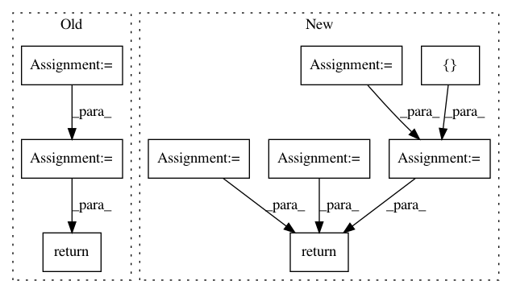

3a770cbc97085c2cd4eaa0a46b2bc037f35389c2,utils.py,,evaluate_accuracy,#Any#Any#Any#,77
Before Change
data_iterator.reset()
for i, batch in enumerate(data_iterator):
data, label = _get_batch(batch, ctx)
output = net(data)
acc += accuracy(output, label)
return acc / (i+1)
def train(train_data, test_data, net, loss, trainer, ctx, num_epochs, print_batches=None):
Train a network
for epoch in range(num_epochs):
After Change
data.shape[0])
def evaluate_accuracy(data_iterator, net, ctx=[mx.cpu()]):
acc = nd.array([0])
n = 0.
if isinstance(data_iterator, mx.io.MXDataIter):
data_iterator.reset()
for batch in data_iterator:
data, label, batch_size = _get_batch(batch, ctx)
for X, y in zip(data, label):
acc += nd.sum(net(X).argmax(axis=1)==y).copyto(mx.cpu())
acc.wait_to_read() // don"t push too many operators into backend
n += batch_size
return acc.asscalar() / n
def train(train_data, test_data, net, loss, trainer, ctx, num_epochs, print_batches=None):
Train a network
if isinstance(ctx, mx.Context):
In pattern: SUPERPATTERN
Frequency: 5
Non-data size: 9
Instances
Project Name: d2l-ai/d2l-zh
Commit Name: 3a770cbc97085c2cd4eaa0a46b2bc037f35389c2
Time: 2017-10-25
Author: muli@cs.cmu.edu
File Name: utils.py
Class Name:
Method Name: evaluate_accuracy
Project Name: dmlc/gluon-cv
Commit Name: ee602b6f68f0bdd19f449a86955697f8f0a2d54c
Time: 2019-09-21
Author: yizhu59@gmail.com
File Name: gluoncv/data/transforms/video.py
Class Name: VideoNormalize
Method Name: forward
Project Name: shenweichen/DeepCTR
Commit Name: 8182ea386e6529a1a2294d8e2d33fc040d0cbfb2
Time: 2019-07-21
Author: wcshen1994@163.com
File Name: deepctr/inputs.py
Class Name:
Method Name: get_linear_logit
Project Name: GPflow/GPflow
Commit Name: bd1e9c04b48dd5ccca9619d5eaa2595a358bdb08
Time: 2020-01-31
Author: st--@users.noreply.github.com
File Name: gpflow/kernels/misc.py
Class Name: Coregion
Method Name: K
Project Name: ray-project/ray
Commit Name: 36bda8432b2ed23f623c8c3031b2cba148bec93b
Time: 2020-10-01
Author: sven@anyscale.io
File Name: rllib/examples/policy/episode_env_aware_policy.py
Class Name: EpisodeEnvAwarePolicy
Method Name: compute_actions_from_input_dict